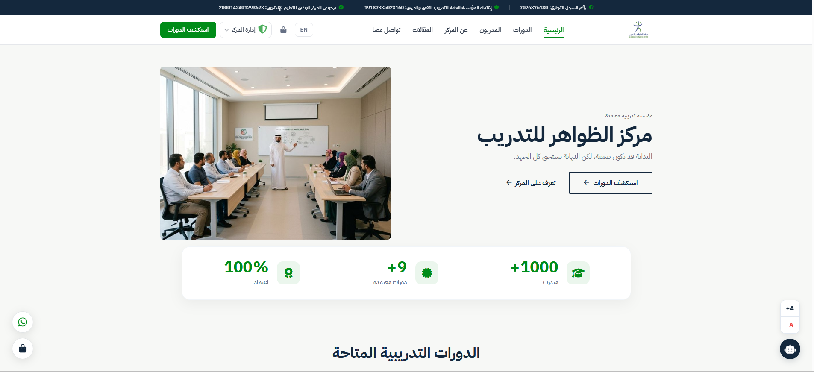
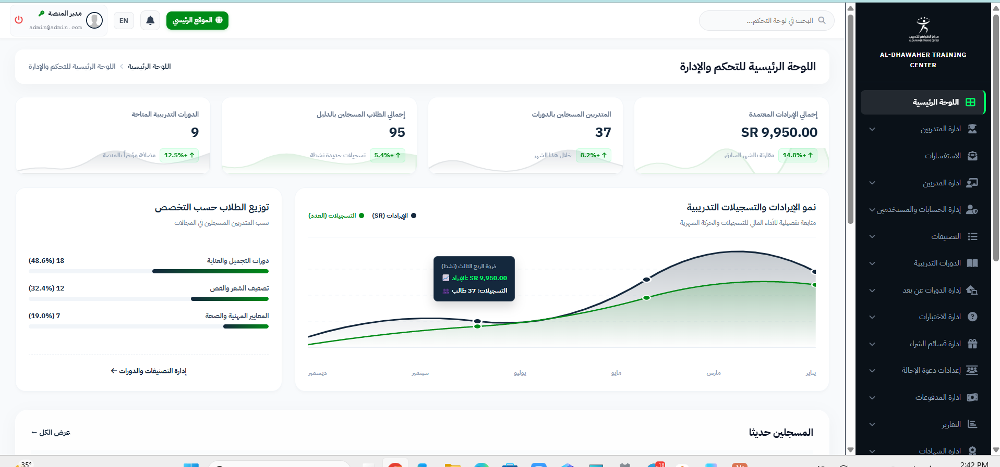
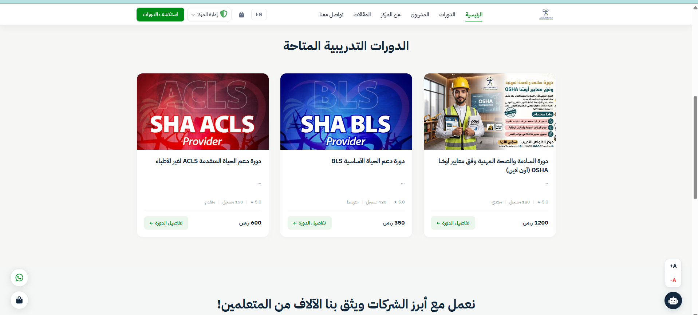

AL-DHAWAHER
مركز الظواهر للتدريب والاستشارات المهنية

التحدي
يكمن التحدي الأساسي في تحويل المتطلبات التنظيمية الصارمة للمؤسسات التدريبية والاعتمادات الحكومية (كالمؤسسة العامة للتدريب التقني والمهني والمركز الوطني للتعليم الإلكتروني) إلى تجربة مستخدم رقمية عصرية وفائقة السلاسة. كان الهدف توفير مسار تصفح سريع وواضح يتيح للمتدربين استكشاف الدورات، مراجعة متطلباتها وتفاصيل ساعاتها المعتمدة، واستكمال التسجيل دون تعقيد، مع بناء بوابة إدارية شاملة تدير المتدربين والمدربين والتقارير المالية والشهادات بكفاءة عالية.
الفكرة والمنهج
تم بناء الهيكلية الرقمية للمنصة وفق أسلوب حداثي يجمع بين الوقار الأكاديمي والوضوح التقني الفائق. اعتمدنا درجات الأخضر المعتمد (الذي يرمز للاعتماد والنمو) مع الأزرق الداكن الرصين، وخلفيات بيضاء نقية تمنح المتدرب راحة بصرية مطلقة وتركيزاً على محتوى الحقائب التدريبية. تم تقسيم الموقع بذكاء إلى محاور رئيسية: دليل الدورات، مسار المدربين واستقطاب الكفاءات، والمدونة المعرفية المتخصصة.
بناء التجربة ولوحة التحكم
تم تصميم رحلة المستخدم لتكون فورية ومباشرة، بدءاً من استعراض تفاصيل الحقيبة التدريبية ومعاييرها المعتمدة، وحتى تأكيد الانضمام. ولتحقيق أقصى كفاءة تشغيلية لإدارة المركز، تم تزويد المنصة بلوحة تحكم وإدارة (Executive Admin Dashboard) متطورة تتضمن مؤشرات أداء حية (KPIs)، رسوماً بيانية تفاعلية لنمو الإيرادات، ومتابعة دقيقة لمعدلات تسجيل المتدربين ونسب توزيعهم حسب التخصصات الطبية والمهنية.

الاتجاه البصري ودليل الدورات
اعتماد خطوط طباعية عربية معاصرة وعالية الوضوح (Tajawal)، وتصميم بطاقات دورات تدريبية متناسقة تبرز السعر، المستوى، وعدد الساعات المعتمدة بنظام شبكي دقيق. كما تم دمج شارات التوثيق الرسمية وأرقام التراخيص والسجل التجاري في أعلى ترويسة الموقع لترسيخ الموثوقية والمصداقية القانونية لدى المتدربين والجهات الحكومية والخاصة.

العقبات والحلول
أثناء التصميم وتطوير المنصة، واجهتنا عقبات رئيسية وتم التغلب عليها كالتالي:
تعقيد تدفق حجز الدورات وتعدد مسارات الاعتماد
قد يشعر المتدرب بالتشتت عند محاولة معرفة متطلبات كل دورة تخصصية وشروط اعتماد ساعاتها لدى الهيئات المعنية مثل جمعية القلب السعودية أو أوشا.
هندسة معمارية هرمية للمعلومات وبطاقات موحدة
تصميم واجهة موحدة توضح كافة التفاصيل الأساسية (الاعتماد، الفئة المستهدفة، السعر، آلية الحضور) في نظرة واحدة مع مسار حجز مباشر وزر إجراء فوري وواضح.
حاجة الإدارة لمتابعة حية ومفصلة لنمو المركز
صعوبة رصد تدفق المتدربين ومتابعة وتوزيع التخصصات يدوياً مع تزايد عدد الملتحقين في البرامج المختلفة.
تطوير لوحة تحكم ذكية وإحصائيات بيانية فورية
بناء لوحة إدارة متكاملة تعرض رسوماً بيانية تفاعلية للإيرادات والتسجيلات الشهرية، وتوزيع نسب الطلاب حسب التخصص (طبي، تجميل، صحة وسلامة مهنية) بكفاءة عالية.
النتيجة
إطلاق منصة رقمية تعليمية متكاملة وسريعة الاستجابة، تجمع بين جمالية التصميم وقوة الأداء البرمجي، مما ساهم في تعزيز ثقة المتدربين ومضاعفة معدلات التسجيل في البرامج التدريبية المعتمدة.